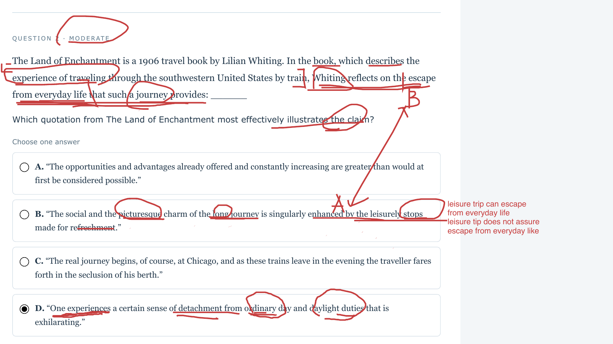
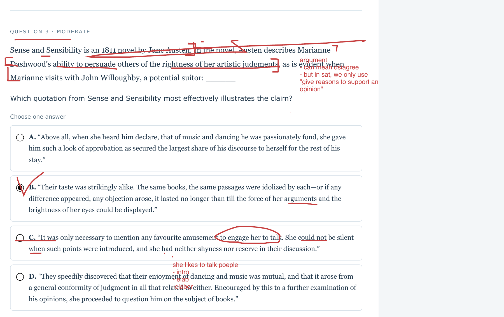
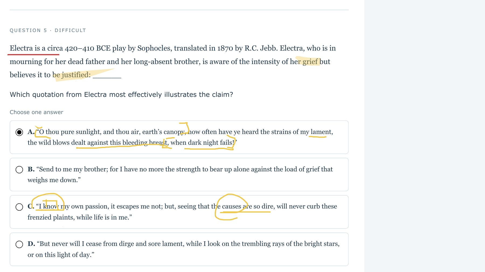

Rachel · Class 02 · September 19, 2026
Literary Evidence · Class Review
- Turn the claim into a precise checklist: who, what feeling or action, and which qualification?
- Match every required part to words in the quotation.
- A shared topic or one matching word is not enough.
Class 00 homework · Question 2
Escape from everyday life
The train journey gives Whiting a feeling of escape from ordinary life.
Show class annotations · Question 2

Open full-size annotations
Show answer and reasoning
D — “Detachment from ordinary day and daylight duties” directly states the required escape; “exhilarating” supplies its felt effect.
- A: Increasing opportunities and advantages do not establish detachment from everyday life.
- B: Pleasant stops make the journey charming, but enjoyment does not necessarily mean escape from routine.
- C: Seclusion in a berth describes the setting and departure, not the claimed psychological detachment.
- D: “Detachment from ordinary day and daylight duties” directly states the required escape; “exhilarating” supplies its felt effect.
Class 00 homework · Question 3
Persuasion, not just conversation
Marianne can persuade someone else to accept her artistic judgment.
Show class annotations · Question 3

Open full-size annotations
Show answer and reasoning
B — Differences last only until “the force of her arguments” appears. Disagreement ends through her persuasion.
- A: She wins his attention by approving his interests; that is not changing his artistic judgment.
- B: Differences last only until “the force of her arguments” appears. Disagreement ends through her persuasion.
- C: She speaks freely about her interests, but no listener changes a judgment.
- D: Mutual enjoyment and generally shared opinions show existing agreement, not persuasion.
Class 00 homework · Question 5
Awareness and justification
Electra recognizes how intense her grief is but considers it justified.
Show class annotations · Question 5

Open full-size annotations
Show answer and reasoning
C — “I know my own passion” shows awareness; “the causes are so dire” supplies the justification for refusing to curb it.
- A: The repeated lament and violent gestures show intensity, but do not justify it.
- B: She admits the heavy burden and asks for her brother; she does not defend the grief as warranted.
- C: “I know my own passion” shows awareness; “the causes are so dire” supplies the justification for refusing to curb it.
- D: She vows never to stop lamenting, but persistence is not an explicit justification.
In the Austen quotation, arguments means reasons used to persuade. Context determines the meaning; the word can mean a disagreement elsewhere. In Electra, “I know” shows awareness; “the causes are so dire” supplies the justification.